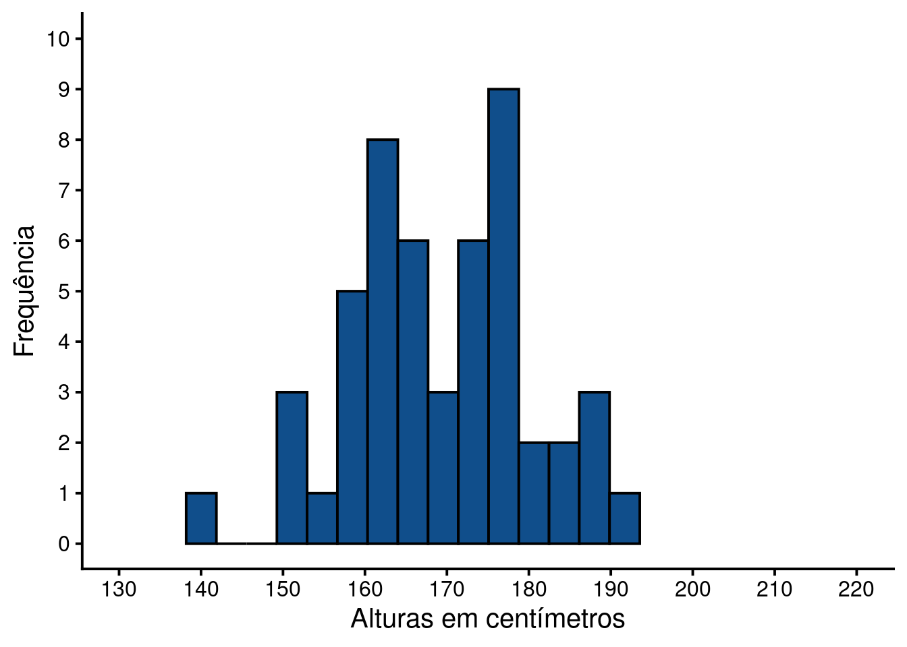
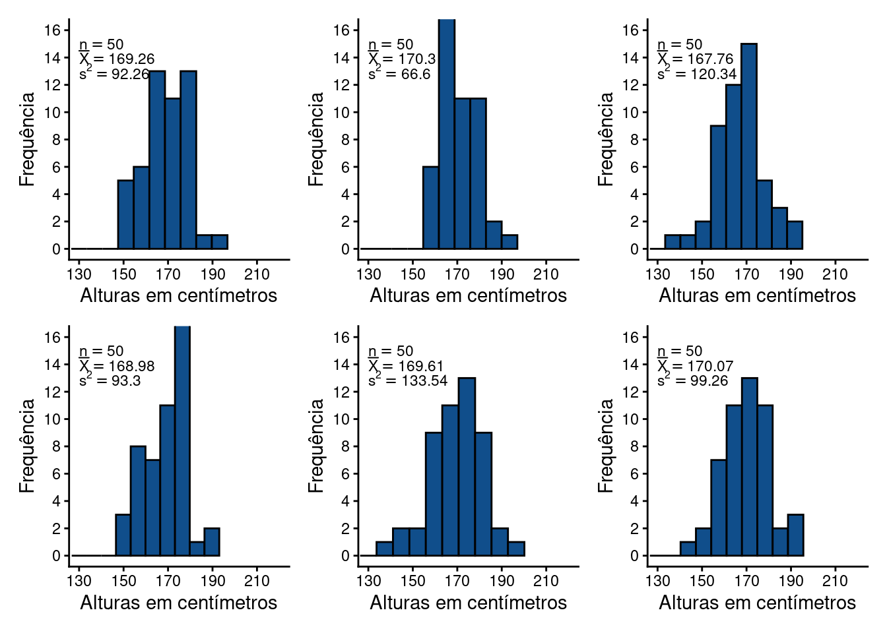

library(tidyverse)
library(patchwork)
library(knitr)Descrevendo populações e amostras
Descreve populações e amostras, abordando a distinção entre parâmetros populacionais e estimadores amostrais.
Pacotes, funções e base de dados utilizadas no capítulo
Pacotes:
1 População, amostra e unidade amostral
Uma população estatística são todos os elementos sobre os quais queremos tirar conclusões. Refere-se ao conjunto de medidas que podem ser mensuradas como resultado de um experimento. As medidas que compõem a população estatística podem ser pesos, temperaturas, velocidades, tempos de reação, entre outras, a depender das características de um estudo particular. Uma população estatística pode ser finita ou infinita. Quando é finita, o número de elementos é dado por \(N\). O termo população não pode ser confundido com seu uso do dia-a-dia, quando refere-se a conjuntos de pessoas ou de organismos, nem mesmo com os elementos físicos nos quais as variáveis foram mensuradas.
A abrangência da população estatística depende do contexto e do escopo da pergunta que se pretende responder.
Exemplo 1: Suponha um estudo para descrever o comprimento do lambari Deuterodon iguape em riachos do litoral de São Paulo. A população estatística não são os peixes em si, mas o comprimento de cada indivíduo que habita os riachos destas bacias. Dado o escopo do estudo (bacias do litoral de São Paulo), a população estatística abrange somente comprimentos dos organismos existem nesta região.
Exemplo 2: Suponha agora que desejamos estudar a diversidade de espécies de peixes em bacias costeiras do litoral de São Paulo. Neste caso, a população estatística seria constituida de um índice de diversidade calculado para cada uma das bacias costeiras do litoral. Fica claro que, neste caso, população estatística não se refere a população biológica, mas sim a variável que foi mensurada a partir do conjunto de espécies que habitam cada bacia.
Nestes dois exemplos é inviável obter informações de todos os elementos que compõem a população estaística. No caso dos comprimentos, não temos como capturar todos os animais presentes em uma bacia hidrográfica, mas ainda que tivéssemos seria inviável medir todos, pois existem provavelmente alguns milhares de peixes somente em um pequeno trecho de riacho. Já o número de Bacias costeiras no litoral do Estado de São Paulo é bem menor, porém ainda seria inviável mensurar a diversidade de espécies em todas elas.
Um censo ocorre nos raros exemplos em que é possível mensurar todos os elementos da população estatística. Entretanto, a prática científica lida com a maioria dos casos em que mensuramos um subconjunto da população estatística, definido como uma amostra. O tamanho da amostra é denominado de \(n\).
Finalmente, unidade amostral é definida como um único elemento da população estatística. A unidade amostral é uma determinada observação da variável de interesse. No exemplo dos lambaris, unidade amostral é o comprimento mensurado em um indivíduo da espécie de interesse, enquanto no exemplo das bacias costeiras, as unidades amostrais são cada um dos valores de diversidade calculados para cada bacia costeira.
DEFINIÇÕES
População estatística: todos os elementos que podem compor uma amostra. Podem ser medidas como comprimentos, temperaturas, velocidades, etc.
Unidade amostral: um único elemento da população.
Censo: o levantamento de todos os elementos da população.
Amostra: um subconjunto extraído da população.
Tamanho populacional (N): o número de elementos da população.
Tamanho amostral (n): o número de elementos da amostra.
2 Distribuição de frequências na população estatística
Os valores em uma população estatística não são idênticos, de modo que poderíamos descrevê-los por meio de uma distribuição de frequência, em que algumas faixas de valores são mais frequentes que outras. Os comprimentos de Deuterodon iguape por exemplo devem variar de alguns milímetros (pós-larva) a cerca de 20 cm (adulto), em que nem todos os comprimentos são igualmente representados. Certamente, existem mais lambaris pequenos e médios do que lambaris grandes. De fato, animais muito grandes são os mais raros, de modo que se tivéssemos informação da população estatística, veríamos que faixas de valores muito elevados se tornariam cada vez menos frequentes.
Se fosse possível observar todos os elementos da população estatística, saberíamos exatamente qual o formato de sua distribuição de frequências. Suponha por exemplo, a altura de adultos acima de 18 anos. Seria razoável supor que a maioria das alturas consiste de valores intermediários ao redor de, por exemplo, 170 centímetros. É razoável supor também que a frequência de pessoas muito altas ou muito baixas vai diminuindo gradativamente, de modo que é muito raro encontrarmos adultos muito altos (ex. acima de \(200\) centímetros) ou muito baixos (ex. menores que \(150\) centímetros). A figura abaixo, descreve uma distribuição de frequência de uma população fictícia de exatamente \(N = 1000\) alturas.
Código
mu = 170
sd = 10
N = 1000
set.seed(1)
adultos = data.frame(
CP = round(rnorm(n = N, mean = mu, sd = sd),2)
)
plt_pop = ggplot(adultos, aes(x = CP)) +
geom_histogram(fill = 'dodgerblue4',
color = 'black', bins = 20) +
labs(x = "Alturas em centímetros",
y = "Frequência") +
scale_x_continuous(breaks = seq(130, 220, by = 10)) +
scale_y_continuous(breaks = seq(0, 200, by = 20)) +
coord_cartesian(ylim = c(0, 200), xlim = c(130, 220)) +
theme_classic(base_size = 15)Código
plt_pop +
annotate(geom = 'text', x = 130, y = 175,
label = deparse(bquote('N' == .(N))), parse = TRUE, hjust = 0, size = 7) +
annotate(geom = 'text', x = 130, y = 155,
label = deparse(bquote(mu == .(mu) ~ 'm')), parse = TRUE, hjust = 0, size = 7)
Vemos que existem mais valores entre \(160\) e \(180\) e poucas observações extremas. Por exemplo, das \(1000\) observações, apenas 27 mais extremas que \(190\) cm, o que é condizente com nossa expectativa para a distribuição de frequências das alturas de indivíduos adultos.
3 Distribuição de probabilidade da população estatística
Na prática, como não temos acesso a toda a população estatística, não temos como visualizar toda a sua distribuição de frequência. Dizemos portanto, que conhecemos a população estatística quando conhecemos a função de probabilidades associada a variável que está sendo mensurada. No exemplo da Figura 1, diríamos que a variável altura segue uma distribuição normal de probabilidades. Quando descrevemos uma distribuição de probabilidades, precisamos caracterizá-la por meio de certas quantidades, ou parâmetros da distribuição. Na distribuição normal, os parâmetros de interesse são a média \(\mu\) e o desvio padrão \(\sigma\). No exemplo das alturas, \(\mu = 170\) e \(\sigma = 10\).
4 Distribuições de frequências na amostra
Código
n = 50
set.seed(2)
selecao = sample(N, size = n)
Am1 = sort(adultos$CP[selecao], decreasing = FALSE)Ainda que não tenhamos acesso a toda população estatística, gostaríamos de ter informações sobre a variável de interesse. Utilizamos o processo de amostragem para obter estas informações.
Suponha, uma amostra de \(n = 50\) adultos. Se organizarmos esta amostra em valores crescentes teríamos:
140.03, 151.5, 152.13, 152.91, 154.07, 158.14, 158.32, 159.59, 159.69, 160.14, 160.42, 160.46, 161.48, 161.89, 162.05, 163.11, 163.59, 163.77, 165.36, 166.11, 166.38, 166.69, 166.76, 167.03, 168.55, 169.72, 170.56, 172.17, 172.94, 173.8, 173.92, 174.34, 174.5, 175.24, 175.76, 175.95, 176.16, 177.13, 177.63, 177.66, 178.03, 178.48, 180.96, 180.97, 183.94, 184.17, 187.54, 187.64, 188.87, 191.69
Os valores estão entre \(140.03\) e \(191.69\), o que certamente não é igual aos valores máximos e mínimos da população. Vamos representar esta amostra por meio de um histograma.
Código
amostra_df = data.frame(CP = adultos$CP[selecao])
ggplot(amostra_df, aes(x = CP)) +
geom_histogram(fill = 'dodgerblue4', color = 'black', bins = 15) +
labs(x = "Alturas em centímetros",
y = "Frequência") +
scale_x_continuous(breaks = seq(130, 220, by = 10)) +
scale_y_continuous(breaks = seq(0, 10, by = 1)) +
coord_cartesian(xlim = c(130, 220), ylim = c(0, 10)) +
theme_classic(base_size = 15)

Ainda que a distribuição da amostra não seja igual à da população estatística, podemos perceber que há uma concentração de valores justamente entre \(160\) cm e \(180\) cm, assim como na população estatística.
A diferença entre a distribuição da população e a distribuição da amostra é esperada e ocorre porque estamos observando um subconjunto particular de elementos. Deste modo, sempre que amostrarmos uma população estatística, teremos uma amostra ligeiramente diferente.
Vamos verificar por exemplo, as distribuições de frequência de seis amostras possíves de tamanho \(n = 50\) desta mesma população.
Código
plot_list = list()
for (i in 1:6){
df = slice_sample(adultos, n = n)
p = ggplot(df, aes(x = CP)) +
geom_histogram(fill = 'dodgerblue4', color = 'black', bins = 10) +
labs(x = "Alturas em centímetros",
y = "Frequência") +
scale_x_continuous(breaks = seq(130, 220, by = 20)) +
scale_y_continuous(breaks = seq(0, 16, by = 2)) +
coord_cartesian(xlim = c(130, 220), ylim = c(0, 16)) +
theme_classic()
plot_list[[i]] = p
}
(plot_list[[1]] + plot_list[[2]] + plot_list[[3]]) /
(plot_list[[4]] + plot_list[[5]] + plot_list[[6]])
Cada amostra resulta em distribuições diferentes, mas em todas a frequência de observações na faixa intermediária é maior. O processo de amostragem nos forneceu portanto amostras representativas da população estatística, isto é, amostras em que a distribuição de frequências se aproximou da distribuição de frequências da população.
Neste exemplo fictício, como conhecemos a população estatística é fácil verificar que as amostras foram representativas. Na prática científica não conhecemos a população estatística e, consequentemente, não temos como saber se a nossa amostra em particular foi ou não representativa.
Devemos portanto conduzir o processo de tal forma que a teoria da amostragem nos garanta que a amostra resultante de um determinado experimento seja, em média, representativa da população. O modo mais simples de garantir este comportamento é realizarmos uma amostra aleatória dos elementos da população estatística.
5 Parâmetros e estimadores
A população estatística tem determinadas quantias de interesse que definimos como parâmetros da população. Se fosse possível medir as alturas dos \(N = 1000\) adultos, poderíamos calcular a média da população. Seja uma variável \(X\) composta por \(X_1, X_2, X_3, \cdots , X_N,\), a média da população estatística é denominada de \(\mu\) e definida por:
\[\mu=\frac{X_1+X_2+X_3+\cdots+X_N}{N}=\frac{\sum_{i=1}^N{X_i}}{N}\] Como não temos acesso a toda a população não podemos obter \(\mu\), mas podemos estimá-lo por meio de uma amostra. Neste caso, seja uma amostra de tamanho \(n\) composta por \(X_1, X_2, X_3, \cdots, X_n\), a média da amosta é denominada de \(\overline{X}\) e definida por:
\[\overline{X}=\frac{X_1+X_2+X_3+\cdots+X_n}{n}=\frac{\sum_{i=1}^n{X_i}}{n}\]
Dizemos que \(\overline{X}\) é um estimador não viciado de \(\mu\).
Como os valores da população estatística não são idênticos, podemos obter uma medida de dispersão como a variância populacional (\(\sigma^2\)) definida por:
\[\sigma^2=\frac{\sum_{i=1}^N{(X_i - \mu)^2}}{N}\]
Novamente, como não temos acesso a todos os \(N\) elementos, podemos apenas calcular a variância amostral (\(s^2\)) definida por:
\[s^2=\frac{\sum_{i=1}^n{(X_i - \overline{X})^2}}{n-1}\]
Note que na expressão acima, substituimos \(\mu\) por \(\overline{X}\) pois estamos nos referindo à variância da amostra. No denominador fizemos a divisão por \(n-1\) não por \(N\). Estas mudanças são necessárias para que \(s^2\) seja um estimador não-viciado de \(\sigma^2\).
Denominamos de parâmetro ao descritor obtido a partir da mensuração de todos os elementos da população estatística e de estimador (ou estatística), a quantia obtida a partir da amostra. Os parâmetros são comumente representados por letras gregas. O símbolo \(\mu\) e \(\sigma^2\) representam, respectivamente, a média e variância populacionais, enquanto \(\overline{X}\) e \(s^2\) são a média e variância amostrais.
DEFINIÇÕES
Parâmetro: a medida que descreve uma característica da população estatística. Ex.: a média (\(\mu\)) ou a variância (\(\sigma^2\)) populacional.
Estimador ou Estatística: Uma medida que descreve uma característica da amostra. Ex.: a média amostral (\(\overline{X}\)) ou a variância amostral (\(s^2\)). Os estimadores támbem podem ser representados por letras gregas com o símbolo \(\hat{}\). A variância amostral, por exemplo, pode ser representada por \(\hat{\sigma}^2\).
Estimativa: é o valor numérico assumido pelo estimador. Ex. o valor numérico calculado para a média ou variância de uma amostra em particular.
5.1 Verificando as propriedades de \(\overline{X}\) e \(s^2\)
Código
Nsmall = 5
nsmall = 2
set.seed(5)
pop_small = sample(20, size = Nsmall, replace = F)
mu = mean(pop_small)
sigma2 = sum((pop_small - mu)^2)/Nsmall
m = matrix(NA, ncol = Nsmall, nrow = Nsmall)
rownames(m) = colnames(m) = as.character(pop_small)
for (i in 1:Nsmall){
for (j in 1:Nsmall){
m[i,j] = paste('(', pop_small[i], ' ; ', pop_small[j], ')', sep = '')
}
}Por meio de um exmplo, vamos verificar empiricamente que \(\overline{X}\) e \(s^2\) são estimadores não viciados de \(\mu\) e \(\sigma^2\) respectivamente. Suponha uma população de somente \(5\) elementos.
\[2 - 11 - 15 - 19 - 9\]
1. Calculando \(\mu\) e \(\sigma^2\).
Como conhecemos a população vamos obter:
\[\mu = \frac{\sum_{i=1}^N{X_i}}{N} = \frac{2 + 11 + 15 + 19 + 9}{5}= \frac{5}{5} = 11.2\]
e
\[\sigma^2=\frac{\sum_{i=1}^N{(X_i - \mu)^2}}{N} = \frac{164.8}{5} = 32.96\]
2. Amostrando a população estatística
A Tabela 1 mostra todas as \(25\) amostras com reposição de tamanho \(n = 2\) que podem ser obtidas desta população.
A tabela abaixo mostra todas as \(25\) amostras com reposição de tamanho \(n = 2\) que podem ser obtidas desta população.
Código
knitr::kable(m)| 2 | 11 | 15 | 19 | 9 | |
|---|---|---|---|---|---|
| 2 | (2 ; 2) | (2 ; 11) | (2 ; 15) | (2 ; 19) | (2 ; 9) |
| 11 | (11 ; 2) | (11 ; 11) | (11 ; 15) | (11 ; 19) | (11 ; 9) |
| 15 | (15 ; 2) | (15 ; 11) | (15 ; 15) | (15 ; 19) | (15 ; 9) |
| 19 | (19 ; 2) | (19 ; 11) | (19 ; 15) | (19 ; 19) | (19 ; 9) |
| 9 | (9 ; 2) | (9 ; 11) | (9 ; 15) | (9 ; 19) | (9 ; 9) |
3. Calculando \(\overline{X}\) e \(s^2\).
Em seguida, organizamos as amostras em uma outra tabela, de modo que possamos calcular, para cada uma, os estimadores \(\overline{X}\) e \(s^2\)
Código
tab_df = data.frame(expand_grid(pop_small, pop_small))
colnames(tab_df) = c('X1', 'X2')
tab_df = tab_df |>
rowwise() |>
mutate(Xm = mean(c(X1,X2)),
s2 = var(c(X1,X2)))
Ex = mean(tab_df$Xm)
Es2 = mean(tab_df$s2)Código
tab_df |>
knitr::kable(col.names = c('$x_1$', '$x_2$', '$\\overline{X}$', '$s^2$'))| \(x_1\) | \(x_2\) | \(\overline{X}\) | \(s^2\) |
|---|---|---|---|
| 2 | 2 | 2.0 | 0.0 |
| 2 | 11 | 6.5 | 40.5 |
| 2 | 15 | 8.5 | 84.5 |
| 2 | 19 | 10.5 | 144.5 |
| 2 | 9 | 5.5 | 24.5 |
| 11 | 2 | 6.5 | 40.5 |
| 11 | 11 | 11.0 | 0.0 |
| 11 | 15 | 13.0 | 8.0 |
| 11 | 19 | 15.0 | 32.0 |
| 11 | 9 | 10.0 | 2.0 |
| 15 | 2 | 8.5 | 84.5 |
| 15 | 11 | 13.0 | 8.0 |
| 15 | 15 | 15.0 | 0.0 |
| 15 | 19 | 17.0 | 8.0 |
| 15 | 9 | 12.0 | 18.0 |
| 19 | 2 | 10.5 | 144.5 |
| 19 | 11 | 15.0 | 32.0 |
| 19 | 15 | 17.0 | 8.0 |
| 19 | 19 | 19.0 | 0.0 |
| 19 | 9 | 14.0 | 50.0 |
| 9 | 2 | 5.5 | 24.5 |
| 9 | 11 | 10.0 | 2.0 |
| 9 | 15 | 12.0 | 18.0 |
| 9 | 19 | 14.0 | 50.0 |
| 9 | 9 | 9.0 | 0.0 |
Vemos que a média amostral pode variar entre 2, quando amostramos o menor valor da população duas vezes (isto é, o número 2) e 19, quando a amostra contém o maior valor da população (isto é, 19). Vemos ainda que existe uma maior concentração de valores entre \(8\) e \(14\) e que a distribuição das médias é aproximadamente simétrica.
Para a variância amostral \(s^2\) também verificamos uma grande diferença entre as amostras particulares, com resultados que varia entre 0 e 144.5, além de uma distribuição altamente assimétrica.
Código
plt_Xm = ggplot(tab_df, aes(x = Xm)) +
geom_histogram(fill = 'dodgerblue4', color = 'black', bins = 10) +
labs(x = bquote('Distribuição de ' ~ bar(X)),
y = "Frequência") +
scale_x_continuous(breaks = seq(0, 20, by = 2)) +
theme_classic(base_size = 15)
plt_s2 = ggplot(tab_df, aes(x = s2)) +
geom_histogram(fill = 'red4', color = 'black', bins = 12) +
labs(x = bquote('Distribuição de ' ~ s^2),
y = "Frequência") +
scale_x_continuous(breaks = seq(0, 200, by = 20)) +
theme_classic(base_size = 15)Código
plt_Xm | plt_s2
3. Verificando os valores esperados de \(\overline{X}\) e \(s^2\).
Para verificar empiricamente os valores esperados de \(\overline{X}\) e \(s^2\) podemos encontrar sua médias. Vemos que:
\[\overline{\overline{X}} = \frac{\sum_{i=1}^{25}{280}}{25} = 11.2 = \mu\]
e que
\[\overline{s^2} = \frac{\sum_{i=1}^{25}{824}}{25} = 32.96 = \sigma^2\]
Estes resultados mostram que, em média, espera-se que as estimativas de \(\overline{X}\) e \(s^2\) coincidem exatamente com os parâmetros \(\mu\) e \(\sigma^2\). Quando isto ocorre dizemos que o estimador é não viciado.
Amostragem com e sem reposição
A discussão acima é válida para a amostragem de uma população infinita ou para a amostragem com reposição de uma população finita de tamanho \(N\). Se a amostragem for feita sem reposição de uma população finita, \(\overline{X}\) continua sendo o estimador não viciado de \(\mu\), porém o estimador não viciado da variância fica:
\(s^2 = \left( \frac{N-1}{N} \right) \left( \frac{\sum_{i=1}^n{(X_i - \overline{X})^2}}{n-1} \right)\)
Na prática, raramente conduzimos uma amostragem com reposição. No entanto, ou a população é infinita como nos casos de estudos experimentais, ou a população é finita porém muito grande, como na maioria dos estudos observacionais. Neste segundo caso, para populações finitas com \(N\) grande, o termo \(\left( \frac{N-1}{N} \right)\sim 1\).
6 Amostragem e inferência
O problema central que começamos e discutir neste capítulo e com o qual iremos lidar em estatística é que:
Estamos interessados nas características da população estatística, porém só temos informação sobre a amostra.
A estimativa obtida a partir de uma amostra particular é sujeita à variação decorrente do processo de amostragem.
Considere por exemplo, as diferentes amostras que podem ser obtidas a partir da população estatística de alturas para um \(n = 50\) amostras:
Código
plot_list = list()
for (i in 1:6){
df = slice_sample(adultos, n = n)
x_bar = mean(df$CP)
s2_bar = var(df$CP)
p = ggplot(df, aes(x = CP)) +
geom_histogram(fill = 'dodgerblue4', color = 'black', bins = 10) +
labs(x = "Alturas em centímetros",
y = "Frequência") +
scale_x_continuous(breaks = seq(130, 220, by = 20)) +
scale_y_continuous(breaks = seq(0, 16, by = 2)) +
coord_cartesian(xlim = c(130, 220), ylim = c(0, 16)) +
annotate(geom = 'text', x = 130, y = 15, label = deparse(bquote('n' == .(n))), parse = TRUE, hjust = 0, size = 3) +
annotate(geom = 'text', x = 130, y = 14, label = deparse(bquote(bar(X) == .(round(x_bar,2)))), parse = TRUE, hjust = 0, size = 3) +
annotate(geom = 'text', x = 130, y = 13, label = deparse(bquote(s^2 == .(round(s2_bar,2)))), parse = TRUE, hjust = 0, size = 3) +
theme_classic()
plot_list[[i]] = p
}
(plot_list[[1]] + plot_list[[2]] + plot_list[[3]]) /
(plot_list[[4]] + plot_list[[5]] + plot_list[[6]])

Vemos que a cada nova amostra, \(\overline{X}\) e \(s^2\) são numericamente diferentes e não coicidem com os parâmetros da população estatística (\(\mu = 11.2\), \(\sigma^2 = 100\)). Vemos entretanto, que mesmo sendo diferentes, estão ao redor dos parâmetros populacionais. Se pudermos conhecer algumas propriedades destes estimadores, seremos capazes de estabelecer limites de confiança sobre as conclusões que podemos tirar as respeito da população estatística.
Neste sentido, o processo de amostragem e inferência consiste em:
Obter uma amostra representativa da população estatística;
Calcular estimativas a partir das características da amostra (ex. \(\overline{X}\) e \(s^2\));
Assumir distribuições de probabilidade apropriadas para os estimadores;
Utilizar para estas distribuições para calcular intervalos de confiança ou testar hipóteses estatísticas.
Este processo pode ser resumido na figura abaixo e será discutido nos próximos capítulos.

Vídeo-aulas